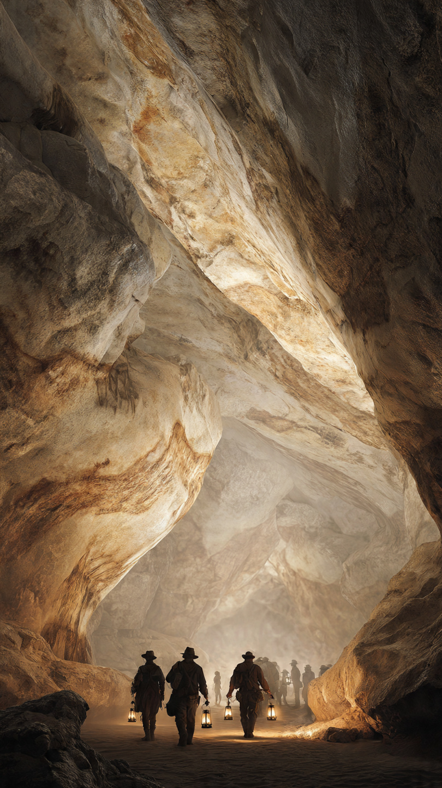
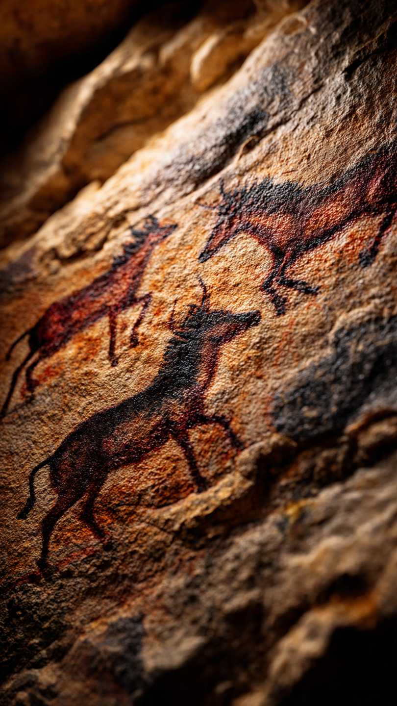

```html
الكهف الذي كشف أسرار الإنسان الأول | اكتشافات وعلوم
```
في عام 1940، كان أربعة فتيان يسيرون في منطقة ريفية جنوب غرب فرنسا.
لم يكونوا يبحثون عن كنز.
ولم يتوقعوا أن يجدوا شيئًا سيغيّر فهم البشر لتاريخهم.
كانوا يستكشفون المنطقة بالقرب من بلدة مونتينياك، عندما لاحظوا فتحة غريبة في الأرض.
في البداية، ظنوا أنها مجرد حفرة عادية.
لكن الفضول دفعهم إلى الاقتراب أكثر.
أحدهم نزل إلى الداخل، ثم اكتشف أن الفتحة تؤدي إلى ممر مظلم يمتد تحت الأرض.
لم يكن يعلم أن هذا الممر يخفي واحدًا من أعظم اكتشافات علم الآثار في القرن العشرين.
أشعل الفتيان المصابيح ودخلوا ببطء.
كانت الجدران حولهم مغطاة بالظلام والصخور.
لكن بعد أن تقدموا أكثر...
توقفوا من شدة الدهشة.
على جدران الكهف كانت هناك رسومات ضخمة لحيوانات.
خيول.
وثيران.
وغزلان.
وحيوانات لم تعد موجودة اليوم.
لم تكن الرسومات عادية.
فقد كانت مرسومة بدقة مذهلة.
استخدم الإنسان القديم ألوانًا طبيعية من المعادن والفحم، واستغل شكل الصخور ليجعل الحيوانات تبدو أكثر واقعية.
كان واضحًا أن من رسمها لم يكن يرسم بشكل عشوائي.
بل كان يمتلك مهارة وخيالًا كبيرين.
عندما وصل الخبر إلى العلماء، سارعوا إلى دراسة المكان.
واكتشفوا أن هذه الرسومات تعود إلى آلاف السنين، إلى فترة كان يعيش فيها الإنسان القديم كصياد وجامع للغذاء.
لكن السؤال الأكبر كان:
لماذا رسم الإنسان القديم هذه الصور في مكان عميق ومظلم بعيدًا عن ضوء الشمس؟
هل كانت مجرد رسومات؟
أم أنها كانت تحمل معنى أعمق لم نفهمه بعد؟
📷 الصورة رقم 1

بعد اكتشاف كهف لاسكو، بدأ العلماء رحلة طويلة لفهم أسرار الرسومات الموجودة بداخله.
لم تكن المهمة سهلة.
فالكهف كان قديمًا جدًا، والرسومات مر عليها آلاف السنين.
وكان على الباحثين دراسة كل تفصيل صغير لمعرفة كيف عاش الإنسان الذي صنعها.
اكتشف العلماء أن الإنسان القديم لم يكن مجرد كائن يحاول البقاء فقط.
فالرسومات أظهرت أنه كان يملك قدرة على التفكير الرمزي، والتخطيط، والتعبير عن أفكاره بطريقة تشبه ما يفعله البشر اليوم.
لقد لم تكن حياته مجرد البحث عن الطعام والمأوى.
بل كان لديه خيال وفن.
استخدم الرسامون القدماء مواد طبيعية لصنع الألوان.
فالأحمر جاء من بعض المعادن.
والأسود من الفحم أو مواد أخرى.
ثم استخدموا أصابعهم وأدوات بسيطة لوضع الألوان على جدران الكهف.
والأكثر إثارة أنهم رسموا الحيوانات بحركات توحي بالحياة.
فبعض الخيول تبدو وكأنها تجري.
وبعض الحيوانات تظهر في أوضاع مختلفة وكأن الرسام حاول نقل الحركة.
لكن العلماء اختلفوا حول سبب هذه الرسومات.
بعضهم اعتقد أنها ربما كانت مرتبطة بطقوس أو معتقدات قديمة.
وبعضهم رأى أنها كانت طريقة لتعليم الآخرين عن الحيوانات أو تسجيل ما رأوه.
وربما كانت لها أكثر من وظيفة في نفس الوقت.
مع مرور الوقت، أصبح كهف لاسكو واحدًا من أشهر المواقع الأثرية في العالم.
وتوافد الناس لرؤية هذه الرسومات الفريدة.
لكن كثرة الزوار بدأت تهدد الكهف.
فالتغير في الهواء والرطوبة يمكن أن يؤثر على الرسومات القديمة.
لذلك قرر العلماء إغلاق الكهف الأصلي أمام الجمهور لحمايته، وإنشاء نسخ مشابهة تسمح للناس بمشاهدة التجربة دون الإضرار بالآثار.
لكن بقي السؤال الأكبر...
ماذا يمكن أن تخبرنا هذه الرسومات عن بداية عقل الإنسان؟
📷 الصورة رقم 2

مع استمرار دراسة كهف لاسكو، بدأ العلماء يدركون أن الرسومات الموجودة بداخله ليست مجرد صور قديمة على الصخور.
بل كانت نافذة تطل على عقل الإنسان الذي عاش قبل عشرات الآلاف من السنين.
لقد كشفت أن الإنسان القديم كان قادرًا على الملاحظة الدقيقة، والتخيل، وتحويل أفكاره إلى رموز وصور.
قبل اكتشاف هذه الكهوف، كان بعض الناس يعتقدون أن البشر القدماء كانوا بدائيين جدًا في تفكيرهم.
لكن الرسومات أثبتت شيئًا مختلفًا.
فالقدرة على صنع فن معقد تحتاج إلى خيال، وتركيز، ونقل المعرفة بين الأجيال.
وهذا يعني أن الإنسان القديم كان يمتلك جانبًا إبداعيًا يشبه الإنسان الحديث.
لم تكن الحيوانات المرسومة مجرد كائنات عشوائية.
فهي تعكس البيئة التي عاش فيها هؤلاء البشر.
كانت تخبرنا عن الحيوانات التي شاهدوها، وعن الطريقة التي كانوا ينظرون بها إلى العالم من حولهم.
كل خط على الجدار كان يحمل جزءًا من قصة قديمة.
ورغم مرور آلاف السنين، بقيت هذه الرسومات شاهدة على وجود أناس عاشوا قبلنا، وفكروا، وحلموا، وحاولوا ترك أثر لهم في هذا العالم.
لم يكن لديهم كتب أو كاميرات أو أجهزة حديثة.
لكنهم استخدموا ما لديهم:
الصخور.
والألوان الطبيعية.
والخيال.
واليوم، يُعد كهف لاسكو واحدًا من أهم الأدلة على تاريخ الفن البشري.
فهو يذكرنا بأن الإبداع ليس شيئًا جديدًا.
بل هو جزء من طبيعة الإنسان منذ أن بدأ ينظر إلى العالم ويحاول فهمه.
وهكذا...
بدأت القصة باكتشاف حفرة صغيرة في الأرض.
لكن داخلها كان هناك كتاب مفتوح من الماضي.
كتاب لم يُكتب بالكلمات...
بل بالرسومات.
رسالة تركها الإنسان القديم ليقول لنا:
"كنا هنا... وكنا نحلم أيضًا."